Building the Spanish Forehand¶
Building the Spanish ForehandChris Lewit
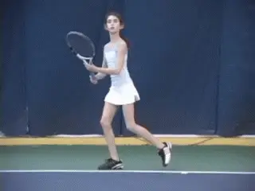
What does it really take to develop a Spanish style forehand?
Over the last 20 to 30 years, Spanish players have evolved from relatively defensive into athletic, physically dominant baseline players who also have all court capabilities.
Part of this evolution has been the technical development of more powerful, whipping, heavy-spin, but versatile forehands. These forehands have allowed Spanish players to continue to defend unbelievably well, but also attack with aggressiveness and force. Rafael Nadal's forehand - one of the best weapons in the modern game-- is the epitome of this trend.
Many coaches would kill to have their students hit a forehand like Rafa, but very few coaches have an understanding of what it takes develop such a weapon with a beginning player, or how to take a player who has learned a classical, \"old school\" forehand and rebuild it into a modern form.
Some coaches are only able to teach what they know: the classical way. Others may attempt to build a more modern swing, but get caught in the many pitfalls along the way.
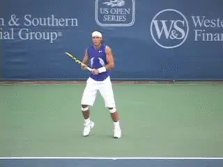
Spanish pilgrimages have shed light on building forehands like Rafa.
Over the last few years, while researching a book project on Spanish tennis, I have been fortunate enough to travel annually to Spain to study with some of the best Spanish coaches, and to train and study at many of the best Spanish academies. My annual \"pilgrimages,\" as I like to think of them, have shed much light onto the way Spanish coaches build big, Rafa-style forehands.
Using my studies in Spain a starting point, I have developed my own system for building the Spanish forehand. I have proven the system works with my high performance players at my school in New York-- as I think the video that goes with the article establishes. Now in this new series, I'm excited to share this system for the first time anywhere with Tennisplayer subscribers.
As in my previous series on the kick serve (link), I will begin by detailing the technical reference points that I'm looking for when building a Spanish forehand. Then I'll move into a discussion of actual drills, exercises, variations, and developmental timelines, as well as what I believe are the common coaching pitfalls.
Reference Points
In order to create a world-class Spanish forehand, we have to start with an understanding of the technical reference points. These are the critical precursors for building a sound, powerful weapon.
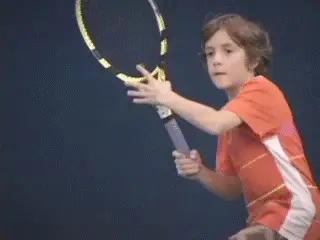
Racket speed: the holy grail of the Spanish forehand.
Which brings us to a paradox. Despite the obvious success of Spanish players, Spanish coaches are not systematically technical, especially when compared to Eastern European coaches, or French coaches.
Jose Altur, a leading Spanish coach in Valencia, who (along with Pancho Alvarino) developed Marat Safin, Dinara Safina, and David Ferrer actually told me that the biggest weakness of Spanish tennis was actually a lack of attention to technical detail!
I think the truth is that the technical aspects are implicit in the process by which the Spanish coaches develop players, a process that may have become second nature to Spanish coaches and players. But as a technician who was trained in another coaching culture, I have tried to extract the parameters of the basic Spanish model in order to really understand them, and then to systematize them into a developmental approach.
I believe this is necessary to clarify the basic principles for others not trained in the Spanish system, which includes virtually all American coaches and players. This understanding is the basis for using the training exercises and drills.
Based on my years of developing national and international standard junior players, I believe the system is highly effective, and that these technical specifications will be a great help to anyone seeking to understand or build a modern, Spanish-influenced forehand.
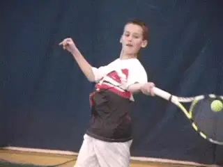
The Spanish swing shape traces a parabola in front of the player.Racket Speed
When we look at the Spanish forehand the number one characteristic is incredible racket head speed. In a previous article I have referred to racket speed as the holy grail of Spanish tennis. (link.)
Racket speed is what allows Spanish players to develop unequalled levels of spin without sacrificing pace. It allows them to hit through the court and dominate on slow red clay. It also allows them to be successful on a wide range of faster surfaces by adjusting the balance of speed and spin.
Parabola Swing
A second major reference point for the Spanish forehand is swing shape. On the basic drive, the swing takes the shape of a parabola, tracing an arc in front of the player, and then finishing across and around the body.
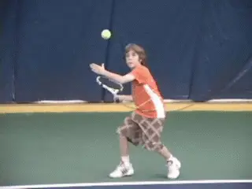
Airborne contact and extreme body rotation: more Spanish heresies.
There are a variety of these across the body finishes, so that the exact size and arc of the parabola can vary from shot to shot. Other coaches call this the windshield wiper and again, as John Yandell has shown, the length and height of this sweeping forward motion varies tremendously when players hit balls from different heights and positions and with different spins and shot intentions. (link.)
Spanish players as epitomized by Nadal also hit a variety of reverse finishes, (a term developed by Robert Lansdorp (link). In the reverse finish, the racket stays on, or crosses back to, the same side of the body the swing starts from. I'll have more to say about that in a future article. But I think these variations are something that players will either tend to evolve naturally, or that should only be developed after the fundamental technical precepts are in place.
Body Rotation
In addition to the distinctive parabola swing, the Spanish forehand is characterized by explosive body rotation, usually including airborne contact. This makes balance critical in the Spanish model, so that the player can land and recover effectively. As we saw in the previous article, balance is a fanatical point in Spain. (link.)
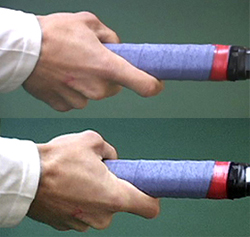
The range of grips I consider viable: Federer (left) to Nadal (right).Grip
Although Nadal is famous for his relatively extreme grip, I believe that a Spanish style forehand can actually be built with a range of grips, ranging anywhere between a strong eastern and an extreme semi-western.
A strong eastern is Roger Federer's grip, with the index knuckle between the third and fourth bevel. An extreme semi-western is Rafa's grip, with the index knuckle between the fourth and fifth bevel.
Most, if not all modern Spanish pros, have grips in the same range as other pro players. This is one reason why Spanish players have very versatile forehands and can transition to fast court play more effectively than in past decades.
A common mistake made by television commentators who should know better is to call Rafa's forehand grip a full western or extreme western, with the palm of the handle completely under the handle. This is inaccurate, and I highly discourage coaches from letting their players use a full western grip. (More on this in an upcoming article). It is a simply a myth that top pros use a western grip to hit big, heavy, whipping forehands.
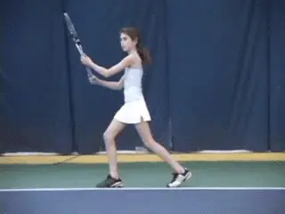
I train kids to turn, coil, explode into the ball and land on balance.
One problem in coaching is that, especially for young junior players, grips may naturally tend to gravitate more towards western over time. Because of this, it is prudent to start a student closer to eastern with the anticipation that the grip will slip toward semi-western over a long-term developmental timeline. If you start a beginning junior or adult with a grip already shifted toward a semi-western, watch carefully for slippage towards a full western and correct as necessary.
Shoulder Coil
To develop the foundation of a big forehand for the future, all beginners need to be taught how to make a deep coil of their shoulders. This means the angle of the shoulders turn more than 90 degrees to the baseline. This full turn loads the core and large muscles groups of the upper body to deliver a powerful rotational force to the ball, and lays the foundation for the extreme movement of the shoulders through the shot.
Young juniors need to be taught this deep coil early. This is critical to the development of timing. However, it also begins developing the musculature involved in delivering power and racket speed through rotation.
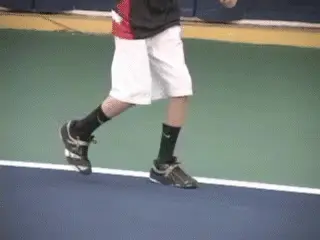
It's a myth that you should try to stay down with your legs on the forehand.
The left arm should come across the body in the preparation phase to help this coiling process. The chin should rest on the left shoulder. When completed the line of the shoulders is now turned past perpendicular to the net.
A deep knee bend is also critical for developing the ability to explode upward and forward into the shot. I look for the 90-90 bend configuration of the knees in the open stance. I want my players to drive upward from the legs, lifting off the ground. This is opposed to traditional coaching advice that recommends staying on the ground for most shots.
This teaching myth has got to be debunked. I know this will sound heretical, but I teach all my beginner junior students to learn how to jump--yes jump! - into their shots. I believe leg drive and dynamic balance can and should be trained from the earliest years.
Kids should learn how to activate their calves and quads and sequence the kinetic chain from the ground up. Just as important, I specifically train the landing after the load/explode sequence, which helps kids learn balance.
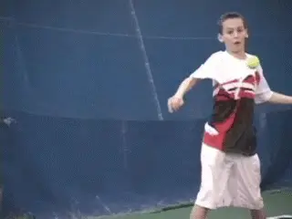
Good head position: critical to consistency.
Most traditional coaches will have a hard time allowing kids to drive off the ground into the air to hit a shot, but this is crucial in learning the modern Spanish forehand. The key is teaching kids to position correctly behind the ball and then jump with balance. As I always say, \"if you are in position you can jump into a shot, but never jump into a shot to gain position.\"
Head Still
Learning to keep the head still is critical to prevent mis-hits during high speed swings involving a lot of body rotation and torque. If a player does not keep the head still and stable during the rotation of the body through the shot, the consistency of the shot will be compromised.
Spanish coaches are obsessed with footwork, balance, and head positioning, but often times American coaches want to skip directly to the power building exercises before the proper foundation is established. Practicing racket speed with sloppy swing technique will ultimately ruin shot accuracy and also, in my opinion, place the player at a greater risk of injury.

In Spain, preparation modeled Nadal with elbows bent and in racket tip up.Hand Configuration
The classic Spanish preparatory position as the player begins to turn is with the elbows bent, the racket arm tucked into side, and the opposite hand on the throat. The racket points up towards sky.
Many coaches in Spain seem to favor this elbow-in preparation. However, this is not immutable and I have had success with players using different hand positions, including a higher elbow or straighter arm preparation.
Although coaches in Spain are flexible about many elements of technique so long as they contribute to developing racket speed, I was surprised at how many coaches did seem to favor the elbow-in preparation. Perhaps this is the influence of Nadal's forehand on the coaching culture. Certainly in Spain, kids will model themselves after a Nadal or Verdasco, so I believe the elbow-in approach will continue to remain prevalent there.
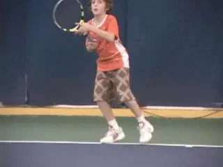
Players developing the Spanish forehand players also need to learn neutral stance.Stance
A final related factor is stance. Because of the across the body swing shapes, body rotation, jumping, and airborne contact, Spanish players naturally hit most of their forehands with open stances. But Nadal and the other Spanish players possess the flexibility to adjust to the neutral stance when necessary, usually when the ball is lower bouncing and below their normal strike zones.
Players need to be taught both an open and neutral stance and should be proficient at both. I usually start my young junior development players with a neutral stance unless they show a natural aptitude for the open stance, in which case we will work on that stance first in the technical development.
Hold Style
The backswing is always a loop, of varying styles, rhythms, and sizes. There is no one correct way to take the racquet back; however, a loop seems to be the standard on the professional tour to develop racket speed.

The \"hold\" rhythm style generates more racket head speed.
I am a big believer in the hold style of rhythm, which means rather than taking the racquet back early, the player holds the racket on the side in the preparatory position - and then accelerates. I believe this hold-rhythm generates more racket speed than the classic racquet back early approach. In fact, racket speed is often sabotaged by traditional coaches insisting that the racket be taken back early (More on this in an upcoming article).
The backswing should stay on the right side of the body \"in the slot,\" not crossing behind the plane of the body. For male professional players, the racket very rarely crosses the plan of body on take back, although there have been some notable exceptions over the years, including Robin Soderling.
Interestingly, in the women's game, there are many top players who do take the racket across the plane of the body on the forehand backswing. Coaches should experiment with the developing girls that they work with and see if they can manage keeping the swing relatively compact and still get good racket speed. I have found that some girls need the extra wind-up to get sufficient power production while most boys can find a compact backswing that is comfortable and can still generate great pace and racket speed.

Players should strive to keep the backswing to the side and not behind the body.Wrist and Forearm
The wrist and forearm actions are arguably the most important part of learning a Spanish style whipping forehand. The looseness of the forearm and whipping action of forearm and wrist significantly deviate from the traditional approach of keeping the forearm and wrist very firm through the contact point.
Most of the whipping action takes place so fast, that the naked eye is challenged as to what exactly is happening in the last moment pre-contact, at contact, and post-contact. As articles by John Yandell have shown, the wrist action is not always what it appears to be, and the subject remains controversial. (link.)
As John has argued, there is minimal wrist forward movement on most whipping forehand shots, despite the millions of coaches who exhort their players to \"use their wrists for topspin.\" To me the most important point here the looseness of the arm and forearm, and I actually rarely talk about the role or the movement of the wrist.
I believe that the hinge action of the forearm is more critical to developing the heavy spin than movement at the wrist joint, something we will explore more through some of the key drills in the second article.
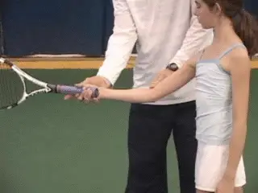
Manual manipulation is very effective in developing the hinge.
For players who are struggling to get a lot of Rafa style spin, the problem is almost always because of stiffness in the swing, whether in the upper arm, forearm, or at the wrist joint.
The best way for a player to develop the proper looseness is to be guided by the coach through physical manipulation and loosening of the arm, rather than visually or verbally. I have found the kinesthetic approach to be very successful with my players who struggle getting the proper whip of the racket through contact.
Players who have been trained classically to have a firm wrist and forearm will often really struggle trying to learn looseness, but with proper coaching and physical manipulation they eventually figure out how to relax the arm and wrist at the right time in the forward swing to generate great spin and ball speed.
Straight Arm or Bent?
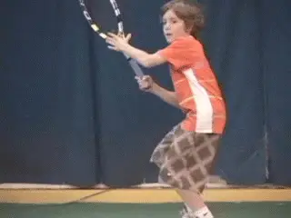
The hitting arm can be double bend or straight.
Federer, Rafa and Verdasco all have their arms straight at the elbow at contact, while some other pros with top forehands like Soderling or Novak Djokovic hit with more of a bent arm configuration.
In my experience, both a straight arm and bent configuration of the hitting arm at contact are acceptable. With my students, I try to get a Rafa straight arm extension without forcing the arm to become stiff.
I believe some players are more likely to hit with a straight arm based on differences in physiology and player preference and feel. I believe the right approach is to work with the individual player to establish his or her most comfortable extension point. Correcting the hitting arm position is especially important for players who are cramped at contact.
Finishes: How Long Do You Go?
As noted, the parabola swings in the Spanish forehand have finishes across the body that vary depending on the shot and situation. When teaching the finishes to my students, I start beginners with a finish over the shoulder, but quickly progress to lower finishes at the side of the shoulder and toward the waist (a more extreme windshield wiper).

I start with the over the shoulder finish, then develop the wraps around the body.
The racket and racquet hand should wrap fully on the finish, whether over the shoulder or around the torso. A complete wrap is an important indicator of whether the player had maximum racket speed.
On the Drop
To develop whip and racket speed the Spanish way, it is essential for players to be allowed to back up and take the ball on the fall. Taking the ball early will kill any attempt to hit a heavy topspin ball. I believe it is equally important to develop the attacking on-the-rise play (link) but when first learning heavy spin, players must be allowed to step back and let the ball drop into their strike zone.
This is called \"receiving the ball\" in Spain. It allows the speed and spin of the ball to die out somewhat, and as the ball drops into the strike zone, players can whip upward to generate the big spin shot. A player who is forced to take every ball early (a more traditional approach), will not be able to load and develop the whipping swing to generate heavy spin. This is why I believe that on the rise attack and heavy spin should be taught as separate topics.

Young players need to hit the ball on the fall to develop massive racket speed and spin.Conclusion
Rafa has revolutionized the modern forehand with his power, racket speed, and versatility. Through experimentation and creativity, coaches and players may be lucky enough to stumble upon the next great forehand evolution. Undoubtedly, however, racket speed and power will always be essential to building a world-class forehand shot, and currently the Spanish have the best system I have found to maximize these two critical components of a world-class forehand.
I encourage all coaches and players who are interested in building a Spanish forehand to experiment with the advice and the exercises I have provided in this series. Most importantly, I hope the reader will be creative and use the ideas from these articles for inspiration to create his or her own drills to help develop better forehand technique and more racket speed! Stayed tuned for the next installment!
Special thanks to my students Sean Mullins, Will Coad, and Lia Kiam for the doing the awesome demonstrations of the Spanish forehand that made this article possible.